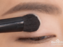
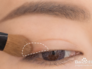
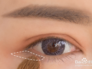
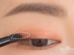
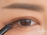
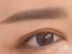

|  | 第一步：浅色眼影粉米色铺在整个眼皮做打底，第一笔落笔在眼皮中间，均匀铺开再整个眼皮，因为这个颜色很浅，只是一个米色打底，不要担心涂花，完全不会的。 |
|  | 第二步：带点红色调的金棕色，用来过渡深浅色，承上启下的作用，首先落笔的地方就是最重的地方，所以尽量以眼尾睫毛根处下笔。 |
|  | 第三步：使用金棕色眼影从眼后下眼角向前晕染，起笔在下眼角外侧。 |
|  | 第四步：最重的棕色眼影，一般都用在眼尾倒三角，落笔时同样紧贴睫毛线 |
|  | 第五步：继续用棕色眼影，要画到眼尾，从后往前画深浅程度，要和上眼影对应。 |
|  | 第六步：眼影效果完成度，为了让眼影衔接更加自然，最后用手指顺一下上眼皮。 |